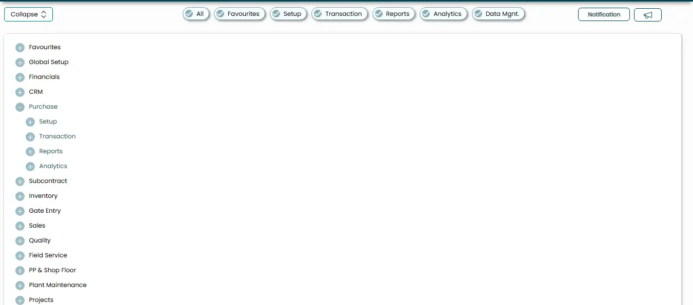
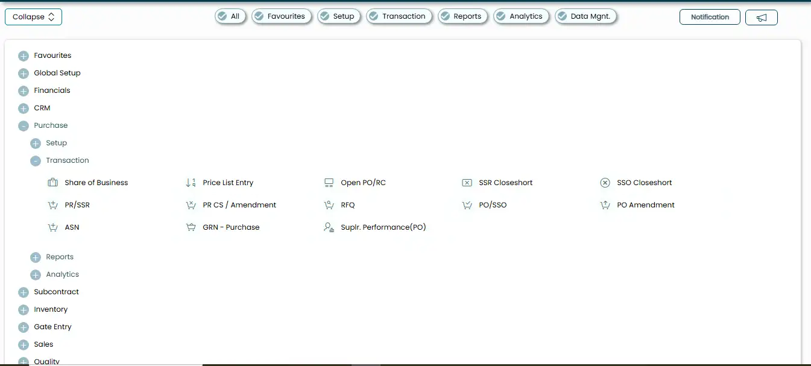
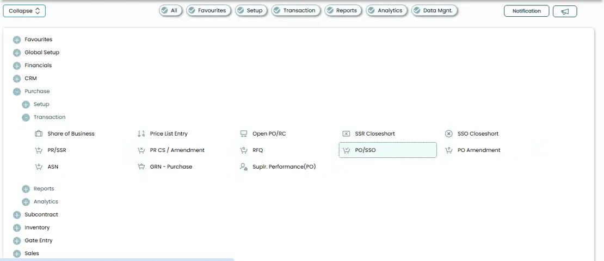

<div data-category="Operating Instructions" data-title="How to Open a Business Function" data-updated="December 01, 2025" data-contributors="RoadmapIT" data-breadcrumb="Home,Operating Instructions,How to Open a Business Function">
  <div class="page-content">
    <p>This screen explains the steps to open a business function by navigating through the application tree.</p>

    <h5>Navigation path:</h5>
    <p class="fs-6">Operating Instructions \ How to Open a Business Function</p>

    <!-- Open Business Function -->
    <h2>How to Open a Business Function:</h2>
    <ul style="list-style-type: none; align-content: center">
      <li class="mouse-icon">Navigate through the application tree.</li>
      <li class="mouse-icon">Click on Purchasing.</li>
      <li class="mouse-icon">Supply Chain \ Purchasing</li>
    </ul>
    
    <ul style="list-style-type: none; align-content: center">
      <li class="mouse-icon">Click on Transactions.</li>
      <li class="mouse-icon">Supply Chain \ Purchasing \ Transactions</li>
    </ul>
    
    <ul style="list-style-type: none; align-content: center">
      <li class="mouse-icon">Click on Transactions.</li>
      <li class="mouse-icon">Purchasing \ Transactions \ Purchase Order</li>
    </ul>
    
  </div>
</div>
